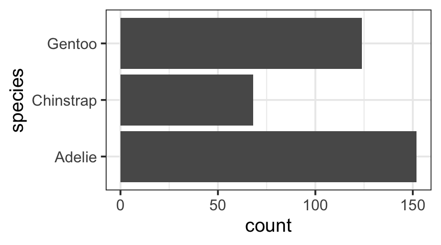

5 + 3[1] 815.3 * 23.4[1] 358.02sqrt(16)[1] 4RStudio is an integrated development environment (IDE) for R a freely available language and environment for statistical computing and graphics. Both are freely available for Mac, PC, and Linux.
In addition to running RStudio on your local machine, you have the option of accessing an RStudio server via a web browser. (For best results, avoid Internet Explorer.)
Notice that RStudio divides its world into four panels. Several of the panels are further subdivided into multiple tabs. The console panel is where we type commands that R will execute.
R can be used as a calculator. Try typing the following commands in the console panel.
5 + 3[1] 815.3 * 23.4[1] 358.02sqrt(16)[1] 4You can save values to named variables for later reuse
product = 15.3 * 23.4 # save result
product # show the result[1] 358.02product <- 15.3 * 23.4 # <- is assignment operator, same as =
product[1] 358.0215.3 * 23.4 -> newproduct # -> assigns to the right
newproduct[1] 358.02.5 * product # half of the product[1] 179.01log(product) # (natural) log of the product[1] 5.880589log10(product) # base 10 log of the product[1] 2.553907log(product, base = 2) # base 2 log of the product[1] 8.483896The semi-colon can be used to place multiple commands on one line. One frequent use of this is to save and print a value all in one go:
15.3 * 23.4 -> product; product # save result and show it[1] 358.02R is divided up into packages. A few of these are loaded every time you run R but most have to be selected. This way you only have as much of R as you need.
In the Packages tab, check the boxes next to the following packages to load them:
You an also load packages by typing, for example
library(DAAG) # loads the DAAG package if it is not already loadedIf you mis-capitalize something in R it won’t do what you want. If you get an error message about an “object not found”, check to see that you spelled it correctly.
functionname( argument1, argument2, ... )The arguments are always surrounded by (round) parentheses and separated by commas.
Some functions (like data()) have no required arguments, but you still need the parentheses.
If you type a function name without the parentheses, you will see the code for that function – which probably isn’t what you want at this point.
If you begin a command and hit the TAB key, R will show you a list of possible ways to complete the command. If you hit TAB after the opening parenthesis of a function, it will show you the list of arguments it expects. The up and down arrows can be used to retrieve past commands.
If you get into some sort of mess typing (usually indicated by extra ‘\(+\)’ signs along the left edge, indicating that R is waiting for more input – perhaps because you have some sort of error in what has gone before), you can hit the escape key to get back to a clean prompt.
Most often, data sets in R are stored in a structure called a data frame. A data frame is designed to hold “rectangular data”. The people or things being measured or observed are called observational units (or subjects or cases when they are people). Each observational unit is represented by one row. The different pieces of information recorded for each observational unit are stored in separate columns, called variables.
There are a number of data sets built into R and many more that come in various add on packages.
You can see a list of data sets in a particular package like this:
library(mosaicData) # load the package
data(package = "mosaicData") # see what data sets are in itYou can find a longer list of all data sets available in any loaded package using
data()The HELPrct data frame from the mosaic package contains data from the Health Evaluation and Linkage to Primary Care randomized clinical trial. You can find out more about the study and the data in this data frame by typing
?HELPrctAmong other things, this will tell us something about the subjects (observational units) in this study:
Eligible subjects were adults, who spoke Spanish or English, reported alcohol, heroin or cocaine as their first or second drug of choice, resided in proximity to the primary care clinic to which they would be referred or were homeless. Patients with established primary care relationships they planned to continue, significant dementia, specific plans to leave the Boston area that would prevent research participation, failure to provide contact information for tracking purposes, or pregnancy were excluded.
Subjects were interviewed at baseline during their detoxification stay and follow-up interviews were undertaken every 6 months for 2 years.
It is often handy to look at the first few rows of a data frame. It will show you the names of the variables and the kind of data in them:
head(HELPrct)When there are a lot of variables, this format can be hard to read. The glimpse() or inspect() functions provide some other options.
glimpse(HELPrct)Rows: 453
Columns: 30
$ age <int> 37, 37, 26, 39, 32, 47, 49, 28, 50, 39, 34, 58, 58, 6…
$ anysubstatus <int> 1, 1, 1, 1, 1, 1, NA, 1, 1, 1, NA, 0, 1, 1, 1, 1, 1, …
$ anysub <fct> yes, yes, yes, yes, yes, yes, NA, yes, yes, yes, NA, …
$ cesd <int> 49, 30, 39, 15, 39, 6, 52, 32, 50, 46, 46, 49, 22, 36…
$ d1 <int> 3, 22, 0, 2, 12, 1, 14, 1, 14, 4, 0, 3, 5, 10, 2, 6, …
$ daysanysub <int> 177, 2, 3, 189, 2, 31, NA, 47, 31, 115, NA, 192, 6, 6…
$ dayslink <int> 225, NA, 365, 343, 57, 365, 334, 365, 365, 382, 365, …
$ drugrisk <int> 0, 0, 20, 0, 0, 0, 0, 7, 18, 20, 8, 0, 0, 0, 0, 0, 0,…
$ e2b <int> NA, NA, NA, 1, 1, NA, 1, 8, 7, 3, NA, NA, NA, 1, NA, …
$ female <int> 0, 0, 0, 1, 0, 1, 1, 0, 1, 0, 1, 1, 0, 0, 0, 1, 0, 0,…
$ sex <fct> male, male, male, female, male, female, female, male,…
$ g1b <fct> yes, yes, no, no, no, no, yes, yes, no, no, no, no, n…
$ homeless <fct> housed, homeless, housed, housed, homeless, housed, h…
$ i1 <int> 13, 56, 0, 5, 10, 4, 13, 12, 71, 20, 0, 13, 20, 13, 5…
$ i2 <int> 26, 62, 0, 5, 13, 4, 20, 24, 129, 27, 0, 13, 31, 20, …
$ id <int> 1, 2, 3, 4, 5, 6, 7, 8, 9, 10, 11, 12, 14, 15, 16, 17…
$ indtot <int> 39, 43, 41, 28, 38, 29, 38, 44, 44, 44, 34, 11, 40, 4…
$ linkstatus <int> 1, NA, 0, 0, 1, 0, 0, 0, 0, 0, 0, 0, 0, 1, 0, 1, 0, 0…
$ link <fct> yes, NA, no, no, yes, no, no, no, no, no, no, no, no,…
$ mcs <dbl> 25.111990, 26.670307, 6.762923, 43.967880, 21.675755,…
$ pcs <dbl> 58.41369, 36.03694, 74.80633, 61.93168, 37.34558, 46.…
$ pss_fr <int> 0, 1, 13, 11, 10, 5, 1, 4, 5, 0, 0, 13, 13, 1, 1, 7, …
$ racegrp <fct> black, white, black, white, black, black, black, whit…
$ satreat <fct> no, no, no, yes, no, no, yes, yes, no, yes, no, yes, …
$ sexrisk <int> 4, 7, 2, 4, 6, 5, 8, 6, 8, 0, 2, 0, 1, 4, 8, 3, 4, 4,…
$ substance <fct> cocaine, alcohol, heroin, heroin, cocaine, cocaine, c…
$ treat <fct> yes, yes, no, no, no, yes, no, yes, no, yes, yes, no,…
$ avg_drinks <int> 13, 56, 0, 5, 10, 4, 13, 12, 71, 20, 0, 13, 20, 13, 5…
$ max_drinks <int> 26, 62, 0, 5, 13, 4, 20, 24, 129, 27, 0, 13, 31, 20, …
$ hospitalizations <int> 3, 22, 0, 2, 12, 1, 14, 1, 14, 4, 0, 3, 5, 10, 2, 6, …inspect(HELPrct)
categorical variables:
name class levels n missing
1 anysub factor 2 246 207
2 sex factor 2 453 0
3 g1b factor 2 453 0
4 homeless factor 2 453 0
5 link factor 2 431 22
6 racegrp factor 4 453 0
7 satreat factor 2 453 0
8 substance factor 3 453 0
9 treat factor 2 453 0
distribution
1 yes (77.2%), no (22.8%)
2 male (76.4%), female (23.6%)
3 no (72%), yes (28%)
4 housed (53.9%), homeless (46.1%)
5 no (62.2%), yes (37.8%)
6 black (46.6%), white (36.6%) ...
7 no (71.5%), yes (28.5%)
8 alcohol (39.1%), cocaine (33.6%) ...
9 no (50.3%), yes (49.7%)
quantitative variables:
name class min Q1 median Q3 max
1 age integer 19.000000 30.00000 35.00000 40.00000 60.00000
2 anysubstatus integer 0.000000 1.00000 1.00000 1.00000 1.00000
3 cesd integer 1.000000 25.00000 34.00000 41.00000 60.00000
4 d1 integer 0.000000 1.00000 2.00000 3.00000 100.00000
5 daysanysub integer 0.000000 5.00000 33.00000 164.25000 268.00000
6 dayslink integer 2.000000 74.00000 361.00000 365.00000 456.00000
7 drugrisk integer 0.000000 0.00000 0.00000 1.00000 21.00000
8 e2b integer 1.000000 1.00000 2.00000 3.00000 21.00000
9 female integer 0.000000 0.00000 0.00000 0.00000 1.00000
10 i1 integer 0.000000 3.00000 13.00000 26.00000 142.00000
11 i2 integer 0.000000 4.00000 18.00000 33.00000 184.00000
12 id integer 1.000000 119.00000 233.00000 348.00000 470.00000
13 indtot integer 4.000000 32.00000 38.00000 41.00000 45.00000
14 linkstatus integer 0.000000 0.00000 0.00000 1.00000 1.00000
15 mcs numeric 6.762923 21.67575 28.60242 40.94134 62.17550
16 pcs numeric 14.074291 40.38438 48.87681 56.95329 74.80633
17 pss_fr integer 0.000000 3.00000 7.00000 10.00000 14.00000
18 sexrisk integer 0.000000 3.00000 4.00000 6.00000 14.00000
19 avg_drinks integer 0.000000 3.00000 13.00000 26.00000 142.00000
20 max_drinks integer 0.000000 4.00000 18.00000 33.00000 184.00000
21 hospitalizations integer 0.000000 1.00000 2.00000 3.00000 100.00000
mean sd n missing
1 35.6534216 7.7102660 453 0
2 0.7723577 0.4201653 246 207
3 32.8476821 12.5144598 453 0
4 3.0596026 6.1875894 453 0
5 75.3073770 79.2374134 244 209
6 255.6055684 151.0226916 431 22
7 1.8871681 4.3365219 452 1
8 2.5046729 2.5245232 214 239
9 0.2362031 0.4252180 453 0
10 17.9072848 20.0202390 453 0
11 24.5474614 28.0201504 453 0
12 233.4017660 134.7467214 453 0
13 35.7284768 7.1522016 453 0
14 0.3781903 0.4854990 431 22
15 31.6766783 12.8393373 453 0
16 48.0485416 10.7846027 453 0
17 6.7064018 3.9950056 453 0
18 4.6423841 2.8001526 453 0
19 17.9072848 20.0202390 453 0
20 24.5474614 28.0201504 453 0
21 3.0596026 6.1875894 453 0From this we see that there are 453 observational units in this data set and 30 variables. That’s plenty of variables to get us started with exploration of data.
Here is another data set in the mosaic package:
head(KidsFeet)A final example data set comes from the alr4 package. This package is probably not loaded (unless you already loaded it). You can load it from the Packages tab or by typing the command
library(alr4) # require(alr4) will also workOnce you have done that, you will have access to the data set containing information about Old Faithful eruptions.
head(oldfaith)If you want to know the size of your data set, you can ask it how many rows and columns it has with nrow(), ncol(), or dim():
nrow(oldfaith)[1] 270ncol(oldfaith)[1] 2dim(oldfaith)[1] 270 2In this case we have 270 observations of each of two variables (the length of an eruption and the time until the next eruption). In a data frame, the observational units are always in the rows and the variables are always in the columns. If you create data for use in R (or most other statistical packages), you need to make sure your data are also in this shape.
In the Environment tab you will “Import Dataset”. Click on this import data from a CSV file, Excel spreadsheet, or a few other formats. When you do this, the R code will be displayed, so you can see how it is done in R code.
If you are using the RStudio server, you will first need to upload your file to the server (unless you can access the file via URL). To do this, choose “Upload” from the Files tab.
Using the mosiac and ggformula packages, we can compute a wide variety of graphical and numerical summaries using the following general template:

We will see this same template used again for linear and non-linear modeling as well, so it is is important to master it.1
goal: The name of the function generally describes your goal, the thing you want the computer to produce for you. In the case of plotting, it is the name of the plot. When we do numerical summaries it will be the name of the numerical summary (mean, median, etc.).y: For plots, this is the variable that goes on the y-axis.x: For plots, this is the variable that goes on the x-axis.formula: Together, y ~ x is called a formula. Very often we can think of y ~ x as “y depends on x”. We will see that sometimes we can omit y ore replace x with . (there must always be something on the right-hand side). We will even see things like y ~ x | z. But the most important formula to learn is y ~ x.mydata: A data frame must be given in which the variables mentioned in the formula can be found. Variables not found there will be looked for in the enclosing environment. Sometimes we will take advantage of this to avoid creating a temporary data frame just to make a quick plot, but generally it is best to have all the information inside a data frame.The most common way to look at two quantitative variables is with a scatter plot. The ggformula function for this is gf_point(), and the basic syntax is
gf_point( yvar ~ xvar, data = dataName)Let’s look at an example. Let’s see how bill length is related to body mass in some penguins.
library(palmerpenguins)
head(penguins) gf_point(bill_length_mm ~ body_mass_g, data = penguins)Warning: Removed 2 rows containing missing values (`geom_point()`).That’s all there is to it. We can replace bill_length_mm, body_mass_g, and penguins with any variables and data set we like to get the scatter plot we want.
Let’s add some color. Consider the next two examples.
gf_point(bill_length_mm ~ body_mass_g, color = "navy", data = penguins)Warning: Removed 2 rows containing missing values (`geom_point()`).gf_point(bill_length_mm ~ body_mass_g, color = ~ species, data = penguins)Warning: Removed 2 rows containing missing values (`geom_point()`).species. Think of color = ~ species as “color depends on species”. The warnings, by the way, are indicating that two rows of data were not used in making the plot because they were missing data needed for the plot (either bill_length_mm or body_mass_g).
# This is a bit of bonus code,
# in case you are interested to see how we find these two penguins.
penguins |>
filter(is.na(bill_length_mm) | is.na(body_mass_g))With so much data in so little space, overplotting (dots on top of each other) can make it hard to see what is going on. We can improve this plot by making the dots smaller and semi-transparent.
gf_point(bill_length_mm ~ body_mass_g,
color = ~ species, data = penguins,
size = 0.8, alpha = 0.6)Warning: Removed 2 rows containing missing values (`geom_point()`).alpha and size.There are many other options we can use to refine our plots. We’ll learn about some of them as we go along. You can use R ’s built-in help to find out more. Our you can type
gf_point()gf_point() uses
* a formula with shape y ~ x.
* geom: point
* key attributes: alpha, color, size, shape, fill, group, stroke
For more information, try ?gf_pointThe formula for a ggformula plot can be extended to create multiple panels, called facets, based on a “condition”, often given by another variable. The general syntax for this becomes
plotname( y ~ x | condition, data = dataName )You can read the formula y ~ x | condition as saying that we want to know how y depends on x separately for each condition. In our penguins example, we might divide up the data according to the islands on which the penguins were spotted.
gf_point(bill_length_mm ~ body_mass_g | island,
color = ~ species, data = penguins,
size = 0.8, alpha = 0.5)Warning: Removed 2 rows containing missing values (`geom_point()`).A scatter plot will be our most common plot for two quantitative variables, but we can use the same template for any other type of plot. Here are two examples.
gf_density2d(bill_length_mm ~ body_mass_g, color = ~ species, data = penguins, alpha = 0.5)Warning: Removed 2 rows containing non-finite values (`stat_density2d()`).gf_hex(bill_length_mm ~ body_mass_g, data = penguins, binwidth = c(250, 2))Warning: Removed 2 rows containing non-finite values (`stat_binhex()`).A distribution is described by telling what values occur and with what frequency. That is, the distribution answers two questions:
Statisticians have devised a number of graphs to help us see distributions of a variable visually. In these graphs, R can compute the y-variable for us. In this case, we simply omit the y part of the formula, so the general syntax for making a graph or numerical summary of one variable in a data frame is
plotname( ~ variable, data = dataName )In other words, there are three pieces of information we must provide to R in order to get the plot we want:
The kind of plot. (gf_histogram(), gf_bar(), gf_density(), gf_boxplot(), etc.)
The name of the variable to plot.
The name of the data frame this variable is a part of.
Note: The same syntax works for numerical summaries as well – thanks to the mosaic package we can apply the same syntax for mean(), median(), sd(), var(), max(), min(), etc. Later we will use this syntax again to compute linear and nonlinear models.
Histograms (and density plots) are the two most common ways of displaying the distribution of a quantitative variable.
Here are a couple examples:
gf_histogram( ~ Duration, data = oldfaith)
gf_histogram( ~ age, data = HELPrct)In each of these plots the height of the bar indicates how many observations fall within the range indicated by the bottom of the bar. So in the histogram below, the red bar indicates that there are almost 60 eruptions of duration between 100 and 125 seconds in this data set.
We can control the (approximate) number of bins using the bins argument. The number of bins (and to a lesser extent the positions of the bins) can make a histogram look quite different.
gf_histogram( ~ Duration, data = oldfaith, bins = 8 )
gf_histogram( ~ Duration, data = oldfaith, bins = 15 )
gf_histogram( ~ Duration, data = oldfaith, bins = 30 )We can use binwidth to set the width of the bins.
gf_histogram( ~ Duration, data = oldfaith, binwidth = 60 )
gf_histogram( ~ Duration, data = oldfaith, binwidth = 20 )
gf_histogram( ~ Duration, data = oldfaith, binwidth = 5 )R also provides a “smooth” version called a density plot and a triangular version called a frequency polygon:;
gf_density( ~ Duration, data = oldfaith )
gf_dens( ~ Duration, data = oldfaith )
gf_freqpoly( ~ Duration, data = oldfaith )`stat_bin()` using `bins = 30`. Pick better value with `binwidth`.If we make a histogram of our data, we can describe the overall shape of the distribution. Keep in mind that the shape of a particular histogram may depend on the choice of bins. Choosing too many or too few bins can hide the true shape of the distribution. (When in doubt, make more than one histogram.)
Here are some words we use to describe shapes of distributions.
We’ll learn about another graph used for quantitative variables (boxplots) soon.
Bar graphs are a way of displaying the distribution of a categorical variable.
gf_bar( ~ species, data = penguins) # vertical bars
gf_bar(species ~ ., data = penguins) # horizontal bars
Statisticians rarely use pie charts because they are harder to read except in a few special cases (like comparing a proportion to 50%).
Overlaying and faceting work the same for these one variables plots as they did for the scatterplots above.
gf_bar( ~ species | island, data = penguins)
gf_histogram( ~ body_mass_g | species, data = penguins)Warning: Removed 2 rows containing non-finite values (`stat_bin()`).gf_dens( ~ body_mass_g, color = ~ species, data = penguins)Warning: Removed 2 rows containing non-finite values (`stat_density()`).For example, we might like to see how the ages of men and women compare in the HELP study, or whether the distribution of lengths of boys’ feet is different from the distribution for girls.
gf_histogram( ~ age | sex, data = HELPrct, binwidth = 5)
gf_dens( ~ length | sex, data = KidsFeet )We can do the same thing for bar graphs.
gf_bar( ~ substance | sex, data = HELPrct)When dividing bar charts into multiple colors, we can present the segmented bars “stacked” (the default) or “dodged”:
gf_bar(~substance, fill = ~sex, data = HELPrct)
gf_bar(~substance, fill = ~sex, data = HELPrct, position = "dodge")Sometimes it is better to display bars with proportions rather than counts. But then we must decide what to use for the denominator. In the first example below, the total of all the bars adds to 1. In the second plot, the total adds to one for each x variable, which makes it easier to see how the proportions of male and female .
gf_props(~substance, fill = ~sex, data = HELPrct)
gf_props(~substance, fill = ~sex, data = HELPrct, denom = ~ x)Often the defaults labels are not ideal for publication purposes. You can add titles and captions and change the labeling of variables using gf_labs().
gf_point(bill_length_mm ~ body_mass_g | island,
color = ~ species, data = penguins,
size = 0.8, alpha = 0.6) |>
gf_labs(x = "body mass (g)", y = "bill length (mm)",
title = "Penguin measurments on 3 islands", caption = "Data Source: palmerpenguins")Warning: Removed 2 rows containing missing values (`geom_point()`).Notice the |> (called the pipe symbol and sometimes read “then”) in the example above. This important and connects the labeling below to the plot above.
You can save plots to files or copy them to the clipboard using the Export menu in the Plots tab. It is quite simple to copy the plots to the clipboard and then paste them into a Word document, for example. You can even adjust the height and width of the plot first to get it the shape you want. But there are much better ways to produce documents with R graphics in them! See the next section.
Copy-and-paste is a bad workflow for lots of reasons, including:
RStudio makes it easy to use techniques of reproducible research to create documents that include text, R commands, R output, and R graphics.
The simplest version of this uses a format called Quarto.2 Quarto is a simple mark up language that allows for a few basic improvements on plain text (section headers, bulletted lists, numbered lists, bold, italics, etc.). Quarto adds the ability to mix in the R stuff. (And it has some fancier stuff, like embedding videos.) The end product can be an HTML file, a PDF document, even a Word or PowerPoint document. HTML is especially good for producing web documents, but it is also useful as preview mode, even if you eventually render to PDF (or Word).3
To create a new Quarto document, go to “File”, “New File”, then “Quarto document”.
When you do this, a file editing pane will open with a simple example quarto file inserted. If you click on “Render”, RStudio will turn this into an HTML file and display it for you. Give it a try. You will be asked to name your file if you haven’t already done so. If you are using the RStudio server in a browser, then your file will live on the server (“in the cloud”) rather than on your computer.
If you look at the example file you will see that the file has three kinds of sections.
At the top of the document is the YAML (Yet Another Markup Language) header. This is where you set things like the author and title for your document and specify certain settings that control how the document is processed.
It is important that this section is syntactically correct (mathing quatoation marks, correct indentation, etc.). If you get an error message with YAML or yaml in it, you will know that something has gone wrong in the YAML header.
If you can’t figure out the problem with your YAML header, copy and paste in the YAML from some other document (a previous document you have made or a new one) and edit from there.
Some of this file is just normal text (with some styling to make headers, bold, italics, etc.)
The third type of section is an R code chunk. These are colored differently to make them easier to see. You can insert a new code chunk by clicking on the icon pictured below.

You can put any R code in these code chunks and the results (text output or graphics) as well as the R code will be displayed in your HTML file.4
RStudio provides two different views of Quarto files. The default is the Visual view. This looks a bit like a simplified version of Word. There is a toolbar you can use to create bold, italics, headers, etc.
If you click on Source in the upper left corner, you will get a different view. This will show your documents as Markdown. You will see that in this view, headers are indicated with #, ##, ###, etc. *italics* turns into italics, and **bold** turns into bold.
You can get a list of all of these mark up shortcuts by selecting the “Markdown Quick Reference” in the help menu.
If you type these while in the Visual view, the will be immediately converted over for you.
Quarto files do not have access to things you have done in your console. (This is good, else your document would change based on things not in the file.) This means that you must explicitly load any data or packages that you use in the Quarto file. In this class, this means that most of your Quarto files will have a chunk near the beginning that includes
```{r}
#| include: false
library(mosaic)
```The special #| include: false comments tells Quarto to run the code, but not to include anything in your document. That way you don’t have to see all of the package loading messages in your document.
Quarto provides a number of chunk options that control how R code is processed. You can use them to do things like:
You can set default values for the chunk options and you can also override them in individual chunks. See https://quarto.org/docs/computations/execution-options.html for more information about chunk options.
The default plots are often bigger than required. You can adjust this by sitting the fig-width and fig-height chunk options. They can be adjusted as necessary.
```{r}
#| fig-width: 4
#| fig-height: 3
#| fig-align: center
gf_histogram(~ Duration, data = oldfaith)
``````{r}
#| fig-width: 8
#| fig-height: 2
#| fig-align: center
gf_histogram(~ Duration, data = oldfaith)
```
You can set default sizes for the entire document by putting them in your YAML header at the top of the document:
format:
html:
fig-width: 8
fig-height: 2
fig-align: center
pdf:
fig-width: 4
fig-height: 3
fig-align: centerThere are lots of arguments that control how plots look. Here are just a few examples, some of which we have already seen.
Sometimes it is nice to have elements of a plot be partly transparent. When such elements overlap, they get darker, showing us where data are “piling up.” Setting the alpha argument to a value between 0 and 1 controls the degree of transparency: 1 is completely opaque, 0 is invisible. The size argument controls the size of lines and points.
Here is another example using data on 150 iris plants of three species.
gf_point(Sepal.Length ~ Sepal.Width, color = ~ Species, data = iris,
alpha = .6, size = 1.8) You can add a title or subtitle, or change the default labels of the axes.
gf_point(Sepal.Length ~ Sepal.Width, color = ~Species, data = iris,
title = "Some Iris Data",
subtitle = "(R. A. Fisher analysized this data in 1936)",
caption = "Source: R's built-in iris data set",
xlab = "sepal width (cm)",
ylab = "sepal length (cm)",
alpha = .6
)title, subtitle, xlab, and ylab. (Using gf_labs() is another way to do this.)These can be used to change the line type, line width, plot symbol, and color of filled in regions.
gf_dens( ~age, data = HELPrct, color = ~ sex, linetype = ~ sex)
gf_dens( ~age, data = HELPrct, color = ~ sex, linetype = "dotted")
gf_histogram( ~ age, data = HELPrct, fill = 'steelblue')linetype and fill.You can see a list of the hundreds of available color names using colors():
colors()There are several ways to get RStudio to help you when you forget something. Most objects in packages have help files that you can access by typing something like:
?bargraph
?histogram
?HELPrctYou can search the help system using
help.search('Grand Rapids') # Does R know anything about Grand Rapids?This can be useful if you don’t know the name of the function or data set you are looking for.
As you type the name of a function in RStudio you can hit the tab key and it will show you a list of all the ways you could complete that name, and after you type the opening parenthesis, if you hit the tab key, you will get a list of all the arguments and (sometimes) some helpful hints about what they are.)
If you know you have done something before, but can’t remember how, you can search your history. The history tab shows a list of recently executed commands. There is also a search bar to help you find things from longer ago.
When things go wrong, R tries to help you out by providing an error message. If you can’t make sense of the message, you can try copying and pasting your command and the error message and sending to me in an email. One common error message is illustrated below.
fred <- 23
frdError in eval(expr, envir, enclos): object 'frd' not foundThe object frd is not found because it was mistyped. It should have been fred. If you see an “object not found” message, check your typing and check to make sure that the necessary packages have been loaded.
The plots we have created have all followed a single template
We will see this same template used again for numerical summaries and linear and non-linear modeling as well, so it is is important to master it. To use it, you just fill in the boxes with the information for your particular task.
goal: The name of the function generally describes your goal, the thing you want the computer to produce for you. In the case of plotting, it is the name of the plot. When we do numerical summaries it will be the name of the numerical summary (mean, median, etc.).formula: For plotting, the formula describes which variables are used on the x-axis, the y-axis and for conditioning. The general scheme is y ~ x | z where z is the conditioning variable. Sometimes y or z are missing (but the right-hand side x must always be included in a formula).mydata: A data frame must be given in which the variables mentioned in the formula can be found. Variables not found there will be looked for in the enclosing environment. Sometimes we will take advantage of this to avoid creating a temporary data frame just to make a quick plot, but generally it is best to have all the information inside a data frame.... There are many optional arguments to control sizes, colors, etc. We will introduce these as they are needed, but several examples have been given in this chapter as well. Consult the help files for assistance.Just fill in the boxes and get your plot.
The goal of a statistical plot is to help us see
Graphical summaries can help us see the distribution of a variable or the relationships between two (or more) variables. The type of plot used will depend on the kinds of variables involved. There is a nice summary of these on page~48. You can use demo() to see how to get R to make the plots in this section.
Later, when we do statistical analysis, we will see that the analysis we use will also depend on the kinds of variables involved, so this is an important idea.
The ggformula graphics plots make it particularly easy to generate plots that divide the data into groups and either produce a panel for each group (using |!) or display each group in a different way (different colors or symbols, using the groups argument). These plots can reveal the possible influence of additional variables – sometimes called covariates.
Many plots are based on the key idea that our eyes are good at comparing areas. Plots that use area (e.g., histograms, mosaic plots, bar charts, pie charts) should always obey this principle
Area \(=\) (relative) frequency
Plots that violate this principle can be deceptive and distort the true nature of the data.
In your solutions to these exercises include both the plots and the code you used to make them as well as any required discussion. Once you get the plots figured out, feel free to use some of the bells and whistles to make the plots even better.
Exercise 1.1 Old Faithful
Create a scatterplot using the two variables in the oldfaith data frame (available in the alr4 package). What do we learn about Old Faithful eruptions from this plot?
Exercise 1.2 CPS85
Where do the data in the CPS85 data frame (in the mosaic package) come from? What are the observational units? How many are there?
Exercise 1.3 Quantitative variable in CPS85
Choose a quantitative variable that interests you in the CPS85 data set. Make an appropriate plot and comment on what you see.
Exercise 1.4 Categorical variable in CPS85
Choose a categorical variable that interests you in the CPS85 data set. Make an appropriate plot and comment on what you see.
Exercise 1.5 Multiple variables in CPS85
Create a plot that displays two or more variables from the CPS85 data. At least one should be quantitative and at least one should be categorical. Comment on what you can learn from your plot.
Exercise 1.6 mpg
Where do the data in the mpg data frame (in the ggplot2 package) come from? What are the observational units? How many are there?
Exercise 1.7 Quantitative variable in mpg
Choose a quantitative variable that interests you in the mpg data set. Make an appropriate plot and comment on what you see.
Exercise 1.8 Categorical variable in mpg
Choose a categorical variable that interests you in the mpg data set. Make an appropriate plot and comment on what you see.
Exercise 1.9 Multiple variables in mpg
Create a plot that displays two or more variables from the mpg data. At least one should be quantitative and at least one should be categorical. Comment on what you can learn from your plot.
Exercise 1.10 Fires
The file at https://rpruim.github.io/Engineering-Statistics/data/Fires.csv is a csv file containing data on wild lands fires in the US over a number of years. You can load this data one of two ways.
url <- "https://rpruim.github.io/Engineering-Statistics/data/Fires.csv"
# equivalent to "From Text (base)" in RStudio
Fires <- read.csv(url)
# alternative method -- equivalent to "From Text (readr)" in RStudio
library(readr)
Fires <- read_csv(url)Rows: 52 Columns: 3
── Column specification ────────────────────────────────────────────────────────
Delimiter: ","
dbl (3): Year, Fires, Acres
ℹ Use `spec()` to retrieve the full column specification for this data.
ℹ Specify the column types or set `show_col_types = FALSE` to quiet this message.You can also use either of these methods to read from a file rather than from a web URL, so this is a good way to get your own data into R
filter(). For example, to get just the subset of years since 1966, you could use the code below. (Be sure to save the result with a new new name if you want to keep the original data available.)Fires2 <- # create a new data set called Fires2
Fires |> # start with all the Fires data
filter(Year > 1966) # then filter to keep only years after 1966Exercise 1.11 What are i1 and i2?
Use R s help system to find out what the i1 and i2 variables are in the HELPrct data frame. Make histograms for each variable and comment on what you find out. How would you describe the shape of these distributions? Do you see any outliers (observations that don’t seem to fit the pattern of the rest of the data)?
Exercise 1.12 i1 and i2 among men and among women
Compare the distribution of i1 among men vs. among women. Do the same for i2.
gf_dens( ~max_drinks, color = ~ sex, data = HELPrct )gf_dens( ~avg_drinks, color = ~ sex, data = HELPrct )Exercise 1.13 i1 and i2 among different treatment groups
Compare the distributions of i1 among the three substance groups. Do the same for i2.
gf_dens( ~i1, color = ~ substance, data = HELPrct )gf_dens( ~i2, color = ~ substance, data = HELPrct )gf_dens( ~i1 | sex, color = ~ substance, data = HELPrct )gf_dens( ~i2 | sex, color = ~ substance, data = HELPrct )gf_point( i2 ~ i1, color = ~ sex, data = HELPrct, alpha = .6, size = .6 )
Exercise 1.14 Snow in GR
The SnowGR contains historical data on snowfall in Grand Rapids, MI. The snowfall total for January, 2014 was 36.6 inches.
Create a histogram of January snowfall totals. How unusual is 36.6 inches of snow in January?
If there is a lot of snow in January, should we expect to have unusually much or little snow in February? Make a scatter plot comparing January and February snowfall totals and comment on what you see there.
gf_histogram( ~ Jan, data = SnowGR)Warning: Removed 1 rows containing non-finite values (`stat_bin()`).36.6 inches is pretty high, but not the highest ever for a January. Certainly well above average.
gf_point(Feb ~ Jan, data = SnowGR)Warning: Removed 2 rows containing missing values (`geom_point()`).There is no clear trend. Sometimes the snow keeps on coming, but a heavy snow January could be followed by either a heavy or light snow February.
This is textbook speak for “you should really take note of this – probably memorize it.”↩︎
A similar, but older, way of doing this uses R Markdown. If you have used R Markdown before, learning Quarto will be very easy – they are very similar.↩︎
You can actually mix in arbitrary HTML and even css, so if you are good at HTML, you can have quite a bit of control over how things look. But if you do that, some things won’t convert to PDF or Word. Here will will focus on the basics and things that work in multiple output formats.↩︎
There are options to do things like (a) run R code without displaying it, (b) run R code without displaying the output, (c) controlling size of plots, etc., etc. But for starting out, this is really all you need to know.↩︎